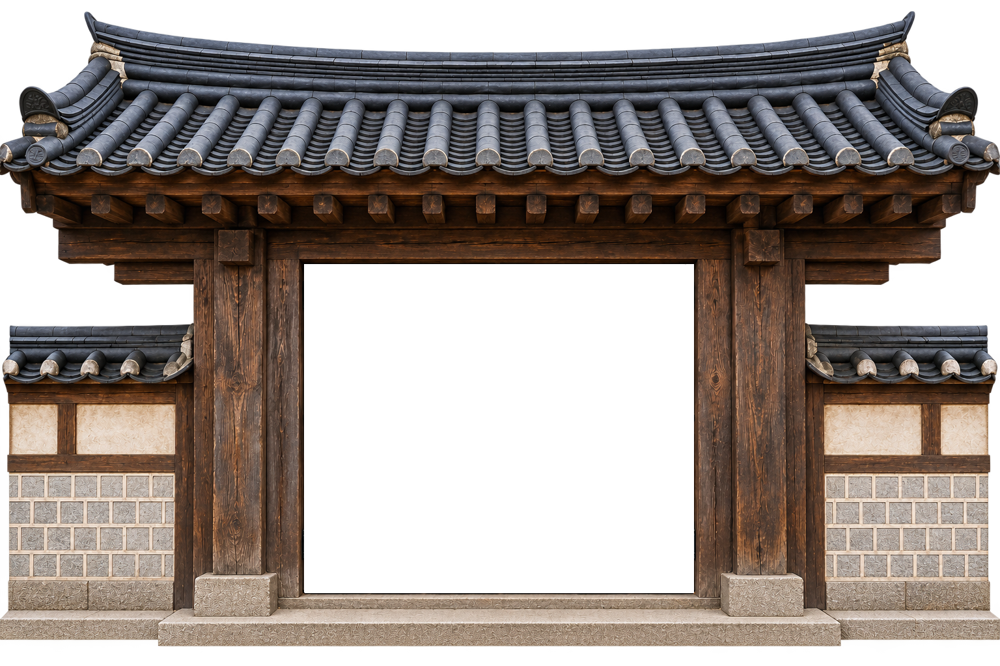
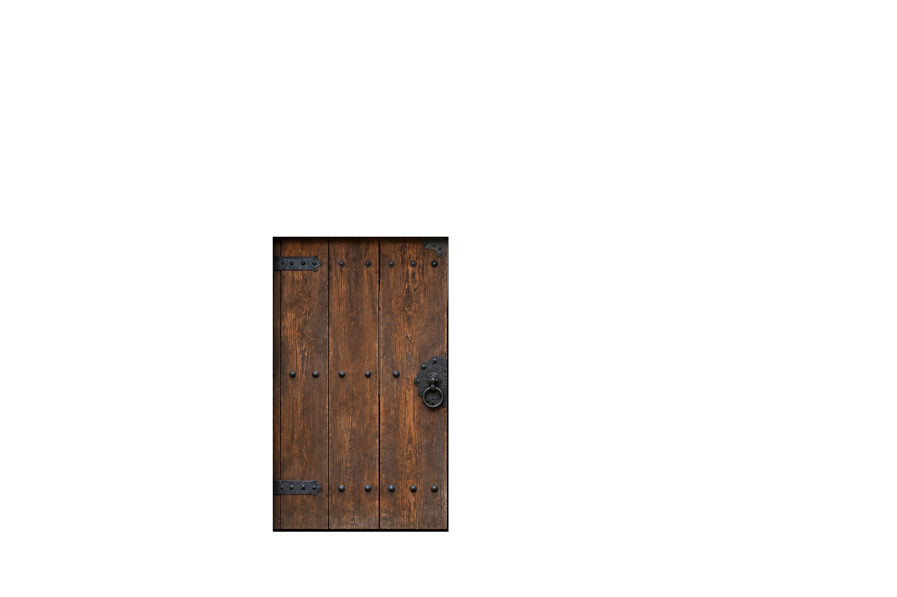
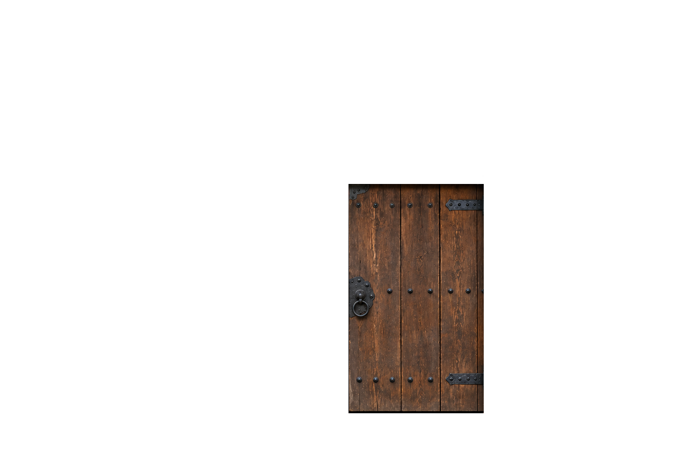

Archive
Trace the details and records of Hanok eaves.



EAVES · LIGHT · SHADOW
Follow the light and shadow beneath the eaves to observe how each structure shapes brightness and spatial boundaries.
WHERE LIGHT BECOMES SPACE
Its depth and form control how light enters, drawing a changing boundary between brightness and shade.
Trace the details and records of Hanok eaves.
Observe how structure shapes light in the 3D Viewer.